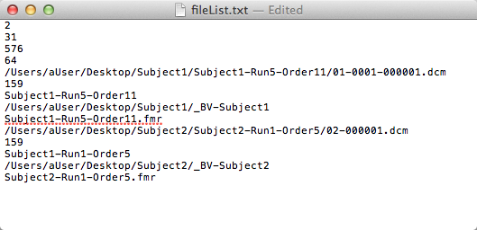
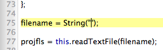

BrainVoyagerBot's FMR Helper assists in automating the process of FMR file creation in BrainVoyager for data sets with 3mm in-plane resolution. While it's possible to completely automate FMR creation using BrainVoyagerBot's FMR Maker (which issues FMR creation commands using AppleScript), due to a bug in BrainVoyager, scripting FMR creation using AppleScript is not possible for data sets with 3mm in-plane resolution. More specifically, when issuing FMR creation commands from an AppleScript for data with 3mm-resolution, BrainVoyager incorrectly sets the in-plane resolution parameters during FMR creation when executing the command. Due to this constraint, FMR creation for 3mm data can only be scripted through JavaScript (the JavaScript script is then run from within BrainVoyager itself). The FMR Helper assists automation for 3mm data by generating a single text file with the information necessary to create FMR files for one or more subjects. The text file can then be used with the included JavaScript file "FMR Creation Helper.js", which automatically creates FMR files using the information in the text file.
Click Select Folder and choose a folder to process. Currently, BrainVoyagerBot only allows one single folder to be selected, and the folder must adhere to one of the following directory structures:
Currently, BrainVoyagerBot can only process EPI/DICOM images. Folders containing the DICOM files must have "EPI" in the directory name. After selecting a folder, enter the number of slices for each functional run, the number of rows (i.e. Mosaic image resolution - the number of slice rows and columns), and the resolution (i.e. the image width/height - X/Y in-plane resolution). Enter a single value for each. These values must be the same for all data to be processed. Finally, select a name and location for the text file output, and click Generate. Once the text file is generated, the path to the file will be copied to the clipboard automatically. If BrainVoyager is already open, the "Edit and Run Scripts..." dialog will automatically open, and a notification will appear as shown below:
If BrainVoyager was not already open, it will be launched automatically, but since BrainVoyagerBot cannot communicate with BrainVoyager until the user Accepts the Welcome pane, a Finder message will appear saying that the text file was created successfully, but the user needs to manually open the Edit and Run Scripts pane in BrainVoyager.
The text file output will include the total number of FMR files that need to be created (necessary for BrainVoyager to read the text file) on the first line, the three user input numbers from above, and for each FMR to be created, the path to the first source file, the number of volumes, and the name of the run. The text file output resembles the following:
To begin FMR creation, paste the path to the text file between the quotes at the bottom of the script:
In addition to generating the text file output, the FMR Helper will also create a folder prefixed with "_BV" inside each subject's main directory for storing the FMR files when they are created in BrainVoyager. This conforms to the Tarrlab's folder naming conventions; Future versions of BrainVoyagerBot will include preferences for whether to create a new folder in each subject's directory, and if so, what it should be named.